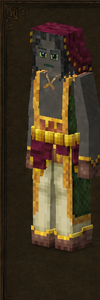
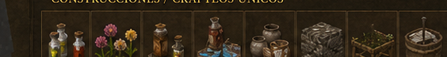

Florista
Florist · código oficial
florist · ficha 07/16
Rasgos: 6
Bonus: 9
Malus: 7
Recetas: 179

Resumen humano
soporte de medicina, abejas y decoración. Bajo combate y minería.
Esta línea es interpretación funcional breve; lo importante son los números y recetas de abajo.
Bonus objetivos
- ahorro de durabilidad de cuchillo: **+75%** (valor interno `0.75`)
- ahorro de durabilidad de guadaña: **+75%** (valor interno `0.75`)
- altura de salto: **+20%** (valor interno `0.2`)
- cosecha suave/eficiencia de colmenas y skeps: **+100%** (valor interno `1`)
- drop de hierba: **+50%** (valor interno `0.5`)
- probabilidad de cola de caballo desde hierba: **+20%** (valor interno `0.2`)
- regeneración pasiva por segundo: **0.1** (valor interno `0.1`)
- velocidad al caminar: **+10%** (valor interno `0.1`)
- velocidad con plantas: **+50%** (valor interno `0.5`)
Malus objetivos
- daño a distancia: **-25%** (valor interno `-0.25`)
- daño contra humanoides: **-20%** (valor interno `-0.2`)
- daño cuerpo a cuerpo: **-25%** (valor interno `-0.25`)
- drop de mineral: **-10%** (valor interno `-0.1`)
- pérdida de estabilidad temporal: **+25%** (valor interno `0.25`)
- velocidad al picar mineral: **-10%** (valor interno `-0.1`)
- velocidad al picar piedra: **-10%** (valor interno `-0.1`)
Rasgos oficiales y efectos reales
| Rasgo | Tipo | Datos objetivos |
|---|---|---|
Senderistawanderer | positivo | daño cuerpo a cuerpo: -25% (interno -0.25)daño a distancia: -25% (interno -0.25)velocidad al caminar: +10% (interno 0.1)altura de salto: +20% (interno 0.2)regeneración pasiva por segundo: 0.1 (interno 0.1) |
Floristaflorist | positivo | sin atributos numéricos en traits.json; desbloqueo/rasgo de receta |
Apicultorapiarist | positivo | cosecha suave/eficiencia de colmenas y skeps: +100% (interno 1) |
Herbalistaherbalist | positivo | probabilidad de cola de caballo desde hierba: +20% (interno 0.2)drop de hierba: +50% (interno 0.5)velocidad con plantas: +50% (interno 0.5)ahorro de durabilidad de cuchillo: +75% (interno 0.75)ahorro de durabilidad de guadaña: +75% (interno 0.75) |
Delicadodelicate | negativo | drop de mineral: -10% (interno -0.1)velocidad al picar mineral: -10% (interno -0.1)velocidad al picar piedra: -10% (interno -0.1)pérdida de estabilidad temporal: +25% (interno 0.25) |
Comprensivosympathetic | negativo | daño contra humanoides: -20% (interno -0.2) |
Recetas / desbloqueos
142mesa normal
20estación
17compatibilidad
179salidas listadas
Categorías detectadas
Pigmentos y tintes: 38Vasijas y recipientes cerámicos: 34Cuadros y pinturas: 25Alfarería y piezas de barro: 21Cuba de mezclas y alquimia: 17Papeles pintados: 9From Golden Combs: apicultura: 9Mezcla de pigmentos: 6Expanded Beekeeping: apicultura: 6Flores: 4Medicina: 4Mesa de germinación: 3Alchemy: medicina: 2Apicultura: 1
Ver salidas exactas de recetas de esta clase (179)
| Modo | Categoría legible | Resultado legible | Nombre ES |
|---|---|---|---|
| mesa de crafteo normal | Apicultura | Beenade closed ×1 | — |
| mesa de crafteo normal | Flores | Flower flowertype libre ×2 | — |
| mesa de crafteo normal | Flores | Flower flowertype libre ×2 | — |
| mesa de crafteo normal | Flores | Flower flowertype libre ×5 | — |
| mesa de crafteo normal | Flores | Flower flowertype libre ×17 | — |
| mesa de crafteo normal | Medicina | Poultice lino horsetail ×4 | — |
| mesa de crafteo normal | Medicina | Poultice lino honey azufre ×4 | — |
| mesa de crafteo normal | Medicina | Poultice reed horsetail ×4 | — |
| mesa de crafteo normal | Medicina | Poultice reed honey azufre ×4 | — |
| mesa de crafteo normal | Cuadros y pinturas | Painting bogfort norte ×1 | — |
| mesa de crafteo normal | Cuadros y pinturas | Painting castleruin norte ×1 | — |
| mesa de crafteo normal | Cuadros y pinturas | Painting cow norte ×1 | — |
| mesa de crafteo normal | Cuadros y pinturas | Painting hunterintheforest norte ×1 | — |
| mesa de crafteo normal | Cuadros y pinturas | Painting seraph norte ×1 | — |
| mesa de crafteo normal | Cuadros y pinturas | Painting sunkenruin norte ×1 | — |
| mesa de crafteo normal | Cuadros y pinturas | Painting traveler norte ×1 | — |
| mesa de crafteo normal | Cuadros y pinturas | Painting howl norte ×1 | — |
| mesa de crafteo normal | Cuadros y pinturas | Painting elk norte ×1 | — |
| mesa de crafteo normal | Cuadros y pinturas | Painting underwater norte ×1 | — |
| mesa de crafteo normal | Cuadros y pinturas | Painting prey norte ×1 | — |
| mesa de crafteo normal | Cuadros y pinturas | Painting forestdawn norte ×1 | — |
| mesa de crafteo normal | Cuadros y pinturas | Painting fishandtherain norte ×1 | — |
| mesa de crafteo normal | Cuadros y pinturas | Painting family1 norte ×1 | — |
| mesa de crafteo normal | Cuadros y pinturas | Painting butterfly norte ×1 | — |
| mesa de crafteo normal | Cuadros y pinturas | Painting glam norte ×1 | — |
| mesa de crafteo normal | Cuadros y pinturas | Painting hunter norte ×1 | — |
| mesa de crafteo normal | Cuadros y pinturas | Painting iris norte ×1 | — |
| mesa de crafteo normal | Cuadros y pinturas | Painting sleepingwolf norte ×1 | — |
| mesa de crafteo normal | Cuadros y pinturas | Painting sodhouse norte ×1 | — |
| mesa de crafteo normal | Cuadros y pinturas | Painting thunderlord norte ×1 | — |
| mesa de crafteo normal | Cuadros y pinturas | Painting trout norte ×1 | — |
| mesa de crafteo normal | Cuadros y pinturas | Painting oldvillage norte ×1 | — |
| mesa de crafteo normal | Cuadros y pinturas | Painting lastday norte ×1 | — |
| mesa de crafteo normal | Cuadros y pinturas | Painting uncle1 norte ×1 | — |
| mesa de crafteo normal | Mezcla de pigmentos | Pigment orange ×1 | — |
| mesa de crafteo normal | Mezcla de pigmentos | Pigment green ×1 | — |
| mesa de crafteo normal | Mezcla de pigmentos | Pigment morada ×1 | — |
| mesa de crafteo normal | Mezcla de pigmentos | Pigment pink ×1 | — |
| mesa de crafteo normal | Mezcla de pigmentos | Pigment gray ×1 | — |
| mesa de crafteo normal | Mezcla de pigmentos | Pigment marrón ×1 | — |
| mesa de crafteo normal | Pigmentos y tintes | Pigment negra ×1 | — |
| mesa de crafteo normal | Pigmentos y tintes | Pigment gray ×1 | — |
| mesa de crafteo normal | Pigmentos y tintes | Pigment white ×1 | — |
| mesa de crafteo normal | Pigmentos y tintes | Pigment white ×1 | — |
| mesa de crafteo normal | Pigmentos y tintes | Pigment marrón ×1 | — |
| mesa de crafteo normal | Pigmentos y tintes | Pigment pink ×1 | — |
| mesa de crafteo normal | Pigmentos y tintes | Pigment pink ×1 | — |
| mesa de crafteo normal | Pigmentos y tintes | Pigment morada ×1 | — |
| mesa de crafteo normal | Pigmentos y tintes | Pigment morada ×1 | — |
| mesa de crafteo normal | Pigmentos y tintes | Pigment azul ×1 | — |
| mesa de crafteo normal | Pigmentos y tintes | Pigment green ×1 | — |
| mesa de crafteo normal | Pigmentos y tintes | Pigment green ×1 | — |
| mesa de crafteo normal | Pigmentos y tintes | Pigment roja ×1 | — |
| mesa de crafteo normal | Pigmentos y tintes | Pigment roja ×1 | — |
| mesa de crafteo normal | Pigmentos y tintes | Pigment orange ×1 | — |
| mesa de crafteo normal | Pigmentos y tintes | Pigment orange ×1 | — |
| mesa de crafteo normal | Pigmentos y tintes | Pigment yellow ×1 | — |
| mesa de crafteo normal | Pigmentos y tintes | Pigment green ×1 | — |
| mesa de crafteo normal | Pigmentos y tintes | Pigment azul ×8 | — |
| mesa de crafteo normal | Pigmentos y tintes | Pigment roja ×8 | — |
| mesa de crafteo normal | Pigmentos y tintes | Pigment green ×8 | — |
| mesa de crafteo normal | Pigmentos y tintes | Pigment roja ×8 | — |
| mesa de crafteo normal | Pigmentos y tintes | Pigment orange ×8 | — |
| mesa de crafteo normal | Pigmentos y tintes | Pigment negra ×8 | — |
| mesa de crafteo normal | Pigmentos y tintes | Pigment yellow ×8 | — |
| mesa de crafteo normal | Pigmentos y tintes | Pigment azul ×1 | — |
| mesa de crafteo normal | Pigmentos y tintes | Pigment morada ×1 | — |
| mesa de crafteo normal | Pigmentos y tintes | Pigment orange ×1 | — |
| mesa de crafteo normal | Pigmentos y tintes | Pigment yellow ×1 | — |
| mesa de crafteo normal | Pigmentos y tintes | Pigment roja ×1 | — |
| mesa de crafteo normal | Pigmentos y tintes | Pigment pink ×1 | — |
| mesa de crafteo normal | Pigmentos y tintes | Pigment green ×1 | — |
| mesa de crafteo normal | Pigmentos y tintes | Pigment negra ×1 | — |
| mesa de crafteo normal | Pigmentos y tintes | Pigment yellow ×1 | — |
| mesa de crafteo normal | Pigmentos y tintes | Pigment gray ×1 | — |
| mesa de crafteo normal | Pigmentos y tintes | Pigment roja ×1 | — |
| mesa de crafteo normal | Pigmentos y tintes | Pigment orange ×1 | — |
| mesa de crafteo normal | Pigmentos y tintes | Pigment white ×1 | — |
| mesa de crafteo normal | Alfarería y piezas de barro | Flowerpot amber ×1 | — |
| mesa de crafteo normal | Alfarería y piezas de barro | Flowerpot boneash ×1 | — |
| mesa de crafteo normal | Alfarería y piezas de barro | Flowerpot celadon ×1 | — |
| mesa de crafteo normal | Alfarería y piezas de barro | Flowerpot copper ×1 | — |
| mesa de crafteo normal | Alfarería y piezas de barro | Flowerpot earthern ×1 | — |
| mesa de crafteo normal | Alfarería y piezas de barro | Flowerpot moss ×1 | — |
| mesa de crafteo normal | Alfarería y piezas de barro | Flowerpot ochre ×1 | — |
| mesa de crafteo normal | Alfarería y piezas de barro | Flowerpot rutile ×1 | — |
| mesa de crafteo normal | Alfarería y piezas de barro | Flowerpot seasalt ×1 | — |
| mesa de crafteo normal | Alfarería y piezas de barro | Flowerpot tenmoku ×1 | — |
| mesa de crafteo normal | Alfarería y piezas de barro | Clayplanter amber ×1 | — |
| mesa de crafteo normal | Alfarería y piezas de barro | Clayplanter ashforest ×1 | — |
| mesa de crafteo normal | Alfarería y piezas de barro | Clayplanter copper ×1 | — |
| mesa de crafteo normal | Alfarería y piezas de barro | Clayplanter cthonic ×1 | — |
| mesa de crafteo normal | Alfarería y piezas de barro | Clayplanter earthern ×1 | — |
| mesa de crafteo normal | Alfarería y piezas de barro | Clayplanter loam ×1 | — |
| mesa de crafteo normal | Alfarería y piezas de barro | Clayplanter ochre ×1 | — |
| mesa de crafteo normal | Alfarería y piezas de barro | Clayplanter rime ×1 | — |
| mesa de crafteo normal | Alfarería y piezas de barro | Clayplanter seasalt ×1 | — |
| mesa de crafteo normal | Alfarería y piezas de barro | Clayplanter tenmoku ×1 | — |
| mesa de crafteo normal | Alfarería y piezas de barro | Clayplanter undergrowth ×1 | — |
| mesa de crafteo normal | Vasijas y recipientes cerámicos | Storagevessel ashforest ×1 | — |
| mesa de crafteo normal | Vasijas y recipientes cerámicos | Storagevessel chthonic ×1 | — |
| mesa de crafteo normal | Vasijas y recipientes cerámicos | Storagevessel copper ×1 | — |
| mesa de crafteo normal | Vasijas y recipientes cerámicos | Storagevessel earthen ×1 | — |
| mesa de crafteo normal | Vasijas y recipientes cerámicos | Storagevessel rain ×1 | — |
| mesa de crafteo normal | Vasijas y recipientes cerámicos | Storagevessel cowrie ×1 | — |
| mesa de crafteo normal | Vasijas y recipientes cerámicos | Storagevessel rime ×1 | — |
| mesa de crafteo normal | Vasijas y recipientes cerámicos | Storagevessel oxblood ×1 | — |
| mesa de crafteo normal | Vasijas y recipientes cerámicos | Storagevessel loam ×1 | — |
| mesa de crafteo normal | Vasijas y recipientes cerámicos | Storagevessel undergrowth ×1 | — |
| mesa de crafteo normal | Vasijas y recipientes cerámicos | Storagevessel beehive ×1 | — |
| mesa de crafteo normal | Vasijas y recipientes cerámicos | Storagevessel harvest ×1 | — |
| mesa de crafteo normal | Vasijas y recipientes cerámicos | Storagevessel honeydew ×1 | — |
| mesa de crafteo normal | Vasijas y recipientes cerámicos | Storagevessel rutile ×1 | — |
| mesa de crafteo normal | Vasijas y recipientes cerámicos | Storagevessel seasalt ×1 | — |
| mesa de crafteo normal | Vasijas y recipientes cerámicos | Storagevessel springflowers ×1 | — |
| mesa de crafteo normal | Vasijas y recipientes cerámicos | Storagevessel volcanic ×1 | — |
| mesa de crafteo normal | Vasijas y recipientes cerámicos | Storagevessel cloisonne ×1 | — |
| mesa de crafteo normal | Vasijas y recipientes cerámicos | Storagevessel cornflower ×1 | — |
| mesa de crafteo normal | Vasijas y recipientes cerámicos | Storagevessel talik ×1 | — |
| mesa de crafteo normal | Vasijas y recipientes cerámicos | Storagevessel caveaurora ×1 | — |
| mesa de crafteo normal | Vasijas y recipientes cerámicos | Storagevessel collonade ×1 | — |
| mesa de crafteo normal | Vasijas y recipientes cerámicos | Storagevessel rattlesnake ×1 | — |
| mesa de crafteo normal | Vasijas y recipientes cerámicos | Storagevessel waves ×1 | — |
| mesa de crafteo normal | Vasijas y recipientes cerámicos | Storagevessel wintersea ×1 | — |
| mesa de crafteo normal | Vasijas y recipientes cerámicos | Storagevessel abyss ×1 | — |
| mesa de crafteo normal | Vasijas y recipientes cerámicos | Storagevessel Cadenas ×1 | — |
| mesa de crafteo normal | Vasijas y recipientes cerámicos | Storagevessel entrenched ×1 | — |
| mesa de crafteo normal | Vasijas y recipientes cerámicos | Storagevessel golden ×1 | — |
| mesa de crafteo normal | Vasijas y recipientes cerámicos | Storagevessel motheaten ×1 | — |
| mesa de crafteo normal | Vasijas y recipientes cerámicos | Storagevessel patina ×1 | — |
| mesa de crafteo normal | Vasijas y recipientes cerámicos | Storagevessel pine ×1 | — |
| mesa de crafteo normal | Vasijas y recipientes cerámicos | Storagevessel serpents ×1 | — |
| mesa de crafteo normal | Vasijas y recipientes cerámicos | Storagevessel void ×1 | — |
| mesa de crafteo normal | Papeles pintados | Wallpaper blue4 ×4 | — |
| mesa de crafteo normal | Papeles pintados | Wallpaper green1 ×4 | — |
| mesa de crafteo normal | Papeles pintados | Wallpaper grey1 ×4 | — |
| mesa de crafteo normal | Papeles pintados | Wallpaper marrón ×4 | — |
| mesa de crafteo normal | Papeles pintados | Wallpaper walnut ×4 | — |
| mesa de crafteo normal | Papeles pintados | Wallpaper darkpurple ×4 | — |
| mesa de crafteo normal | Papeles pintados | Wallpaper yellow ×4 | — |
| mesa de crafteo normal | Papeles pintados | Wallpaper pink ×4 | — |
| mesa de crafteo normal | Papeles pintados | Wallpaper lightgreen ×4 | — |
| estación especial | Cuba de mezclas y alquimia | Pigment negra ×1 | — |
| estación especial | Cuba de mezclas y alquimia | Pigment gray ×1 | — |
| estación especial | Cuba de mezclas y alquimia | Pigment white ×1 | — |
| estación especial | Cuba de mezclas y alquimia | Pigment white ×1 | — |
| estación especial | Cuba de mezclas y alquimia | Pigment marrón ×1 | — |
| estación especial | Cuba de mezclas y alquimia | Pigment pink ×1 | — |
| estación especial | Cuba de mezclas y alquimia | Pigment pink ×1 | — |
| estación especial | Cuba de mezclas y alquimia | Pigment morada ×1 | — |
| estación especial | Cuba de mezclas y alquimia | Pigment morada ×1 | — |
| estación especial | Cuba de mezclas y alquimia | Pigment azul ×1 | — |
| estación especial | Cuba de mezclas y alquimia | Pigment green ×1 | — |
| estación especial | Cuba de mezclas y alquimia | Pigment roja ×1 | — |
| estación especial | Cuba de mezclas y alquimia | Pigment roja ×1 | — |
| estación especial | Cuba de mezclas y alquimia | Pigment orange ×1 | — |
| estación especial | Cuba de mezclas y alquimia | Pigment orange ×1 | — |
| estación especial | Cuba de mezclas y alquimia | Pigment yellow ×1 | — |
| estación especial | Cuba de mezclas y alquimia | Pigment yellow ×1 | — |
| estación especial | Mesa de germinación | Flower flower libre ×16 | — |
| estación especial | Mesa de germinación | Leaves colocado Madera y carpintería ×32 | — |
| estación especial | Mesa de germinación | Leavesbranchy colocado Madera y carpintería ×16 | — |
| receta de compatibilidad | Alchemy: medicina | Potionbase basic ×1 | — |
| receta de compatibilidad | Alchemy: medicina | Herbball potiontype ×4 | — |
| receta de compatibilidad | Expanded Beekeeping: apicultura | Hiveframe empty ×2 | — |
| receta de compatibilidad | Expanded Beekeeping: apicultura | Hiveframe empty ×2 | — |
| receta de compatibilidad | Expanded Beekeeping: apicultura | Broodbox ×1 | — |
| receta de compatibilidad | Expanded Beekeeping: apicultura | Broodbox ×1 | — |
| receta de compatibilidad | Expanded Beekeeping: apicultura | Apiary ×1 | — |
| receta de compatibilidad | Expanded Beekeeping: apicultura | Hivesmoker copper empty ×1 | — |
| receta de compatibilidad | From Golden Combs: apicultura | Langstrothside Madera y carpintería ×8 | — |
| receta de compatibilidad | From Golden Combs: apicultura | Langstrothside envejecido ×8 | — |
| receta de compatibilidad | From Golden Combs: apicultura | Beeframe envejecido empty ×2 | — |
| receta de compatibilidad | From Golden Combs: apicultura | Frameliner ×4 | — |
| receta de compatibilidad | From Golden Combs: apicultura | Waxedflaxtwine ×8 | — |
| receta de compatibilidad | From Golden Combs: apicultura | Framerack envejecido envejecido este ×1 | — |
| receta de compatibilidad | From Golden Combs: apicultura | Langstrothbase envejecido envejecido este ×1 | — |
| receta de compatibilidad | From Golden Combs: apicultura | Langstrothsuper closed envejecido envejecido este ×1 | — |
| receta de compatibilidad | From Golden Combs: apicultura | Langstrothbroodtop envejecido envejecido ×1 | — |
Archivos de esta ficha
Markdown corregido · PNG corregido · Fuente objetiva original si existe
{kind=link}